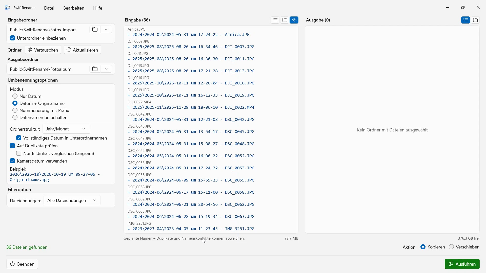
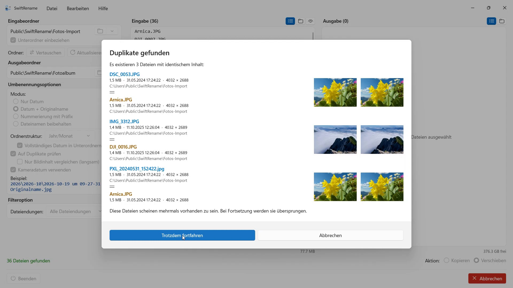

Hunderte Fotos und Dateien in einem Rutsch umbenennen – nach Kameradatum, nummeriert oder in Jahres- und Monatsordner sortiert. Duplikate werden automatisch erkannt.


SwiftRename ist ein Werkzeug zum Umbenennen und Organisieren mehrerer Dateien gleichzeitig. Du kannst Dateien nach Datum umbenennen, durchnummerieren, mit einem Präfix versehen und automatisch in eine Ordnerstruktur einsortieren lassen.
- Erfordert Windows 11 oder neuer
- 24 Sprachen
- Support: SwiftAppsBavaria@gmx.net
- Datenschutzerklärung